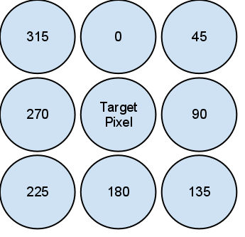

Computer Vision - Edge Detection and Naive Bayes Classifiers
(due 11:59pm Nov 19, 2013)
In this assignment you will create a Computer Vision (CV) system to classify different objects in OpenNERO. To create this system, you will build a training set of snapshots, design custom features, and implement a naive Bayes classifier. You will use the first-person NERO mod in OpenNERO to take a series of training, testing, and validation images containing objects to classify. Your resulting CV system will be able to walk around the NERO world and identify objects.
1. Get a fresh version of OpenNero
This should be easy by now, but if you need some reminding, the following steps should help get you up and running in OpenNERO (Note that for this assignment it is highly recommended/required that you use Linux):
- Login to one of the public labs. Download one of the prebuilt binaries for linux.
- To install OpenNERO on your own machine (Linux), download one of the prebuilt binaries OR
- Build OpenNERO on your own Linux machine using the source code.
Next you need to download the modified NERO files for this assignment. Replace your existing OpenNERO NERO files with the ones in the zip file.
You are free to try using your Mac or Windows machine for this assignment, however the modified NERO vision module has not been shown to run on Mac/Windows, and will likely not work on your non-Linux machine.
2. Install the Python Imagine Library
We're going to be using the Python Imaging Library to help with loading, saving, and manipulating the images we take in OpenNERO.
If you're on a linux lab machine, this is already installed
for you. However, if you're developing on your personal
machine, you may need to install the Python Imaging Library. To do so,
download the latest version (1.1.7) for your OS
(Linux,
windows, MacOSX).
In Linux, install with:
tar xzf Imaging-1.1.7.tar.gz
cd Imaging-1.1.7
python setup.py build
python setup.py install
*The Ubuntu provided binary in 12.04 has also been shown to work, however you need to make sure that you also have the python-imaging-tk package installed as well.
To test your installation of PIL, download a PNG image file such as this stapler:
import Image
im = Image.open("hw5_stapler.png")
print im.format, im.size, im.mode
# >> PNG (600, 468) RGBA
bw = im.convert("L")
bw.save("hw5_bw_stapler.png", "PNG")
The resulting file should look like this black and white version of the stapler.
If you want to create a new, blank image with the same dimensions and color mode as the black and white photo but perhaps with some custom values based on calculations stored in an array (e.g., if you have an array of edge pixels and want to create an image with them):
im = Image.new(screen.mode, screen.size)
im_pixels = im.load()
# iterate over your array and set the image pixels with im_pixels[x,y] = ...
im.save("image.png", "PNG")
Keep in mind that in a black and white photo, the values for each pixel are in the range [0,255]. For more information about using PIL with the Image class, see the online handbook.
3. Install numpy and scipy
Again, you can skip this step if you're on a linux lab machine. Otherwise, you'll need to install numpy and scipy if you're not already able to import them.
Note, installing scipy on Mac python is tricky and requires building of scipy from source. Therefore, it is recommended that you work on a UTCS linux machine.
4. Create training, testing, and validation sets in OpenNERO
Go through the OpenNERO Vision demonstration, and make sure you can execute these steps.
Load the NERO mod in OpenNERO and click the First Person Agent button. This enables you to now move around in first person and take snapshots of the different characters and objects in the world. Each time you take a snapshot, it will be processed using a similar method to the edge detection algorithm is described in section 24.2.1 of your AIMA (third edition) textbook. The results window shows you each of the four steps of edge detection: original (upper left), black and white (upper right), smoothed with a Gaussian filter (lower left), and finally edge pixels detected (lower right). Each intermediate image is saved into the snapshots folder with a timestamped filename. Although each of the images is saved, you should only use the images saved in NERO/snapshots/edges in your classifier.
Take at least 40 training, 20 testing, and 20 validation pictures in this world, with a good mix of each of the objects. You want to be able to classify:
- Steve, the robot agent from the maze world.
- Sydney, a human agent.
- a tree.
- a green cube.
Make sure you have a few of each class of objects in each of your datasets. Also, since the agents are spawned randomly in the world, make sure you gather your samples from multiple runs of the environment; otherwise, your classifier may be learning characteristics about the specific instance of the environment (e.g., mountains and walls in the background) rather than identifying the objects.
5. Create Your Object Classifier
You'll be using a naive Bayes classifier and a set of custom features to classify objects.
5a. Implement a naive Bayes classifer
As a reminder, a naive Bayes classifier works under the (naive) assumption that all feature probabilities are independent. If we are trying to determine the probability that a certain image should be classified as type C, given that it has a certain collection of features {f1, f2, ..., fn}, then we can write that as P(C | f1, f2, ..., fn). Since we are assuming each of our features is independent given C, we can simplify this to be P(C | f1, f2, ..., fn) = P(C | f1) * P(C | f2) * ... * P(C | fn). To create a classifier, you simply calculate the probability score for each possible value of C (i.e., C = Syndey, C = Steve, C = Tree, C = Cube) and choose the C with the highest score.
In the NERO/classifier.py file, you'll notice a skeleton for your classifier:
"""
This is your object classifier. You should implement the train and
classify methods for this assignment.
"""
class ObjectClassifier():
labels = ['Tree', 'Sydney', 'Steve', 'Cube']
"""
Everytime a snapshot is taken, this method is called and
the result is displayed on top of the four-image panel.
"""
def classify(self, edge_pixels, orientations):
return random.choice(self.labels)
"""
This is your training method. Feel free to change the
definition to take a directory name or whatever else you
like. The load_image (below) function may be helpful in
reading in each image from your datasets.
"""
def train(self):
pass
Your classifier should implement the classify and train methods. Each time a snapshot is taken, your classify method will be invoked and the results will be displayed at the top of the four-image panel. You probably want to train your model offline, then you can simply load your trained model in your constructor.
5b. Invent a set of features
Each edge detected image is a black image with a white pixel for each edge. Along with information about whether each pixel is an edge, it's also useful to know the orientation of the edges. This information is derived by looking at the maximum gradient from the edge pixel to any of its neighbors. Thus, each call to classify also passes an array of orientation values for each pixel, with the following values:

For instance, if the maximum change in pixel intensity was from the target pixel to the pixel immediately to its right, the orientation of the target pixel would be 90 degrees. See section 24.2.1 of your textbook for more information on how this process works.
Your features should be based on the detected edges you receive from the edge detection algorithm. For example:
- Number of edge pixels > 100
- Percentage of pixels that are edge pixels > 20%
- Number of edge pixels in the top half of the image that are oriented upward (315, 0, or 45) > 50
These however are just ideas, feel free to experiment with other features.
Now you will use these features to train the naive bayes classifier created in the previous section. For each feature, calculate the probability of each class containing that feature. For example, if half of the Syndey examples have more than 100 edge pixels, you would calculate P(C = Sydney | Number of edge pixels > 100) = 0.5. The result will be a probability matrix where each column is a different class and each row is a different feature; the individual cells correspond to the probability that an example is in that class given it has that feature.
Use the training set to calculate your probability matrix, use the validation set to gauge your accuracy and determine whether you need to add more features or if you're starting to overfit, and use the test set as a hold-out set that you classify only at the very end of the experiment, once you've decided you're finished. You may want to add additional methods to the ObjectClassifier class to help with loading the evaluation and test sets, running ObjectClassifier.classify on them, and calculating the accuracy.
Remember, the more features you create and the more dimensions each feature has, the more powerful your classifier can be. However, you'll also need more training samples and be in danger of overfitting. Start with a small number of simple binary features at first, and gradually expand until you are happy with your classification error.
Turn In Your Results
Create a report describing your training sample size, the features you selected, and your accuracy for the training, testing, and validation sets using your final classifier. Include the sets of images you used and a list of how each one was classified. Please at least include your image files in an archive file (e.g. .zip), the other files you may turn in as you like. To submit your homework:
turnin --submit houck cs343-hw5 [files you modified, image sets, and your report]
Make sure to include the names and UT eids of all members of your team.